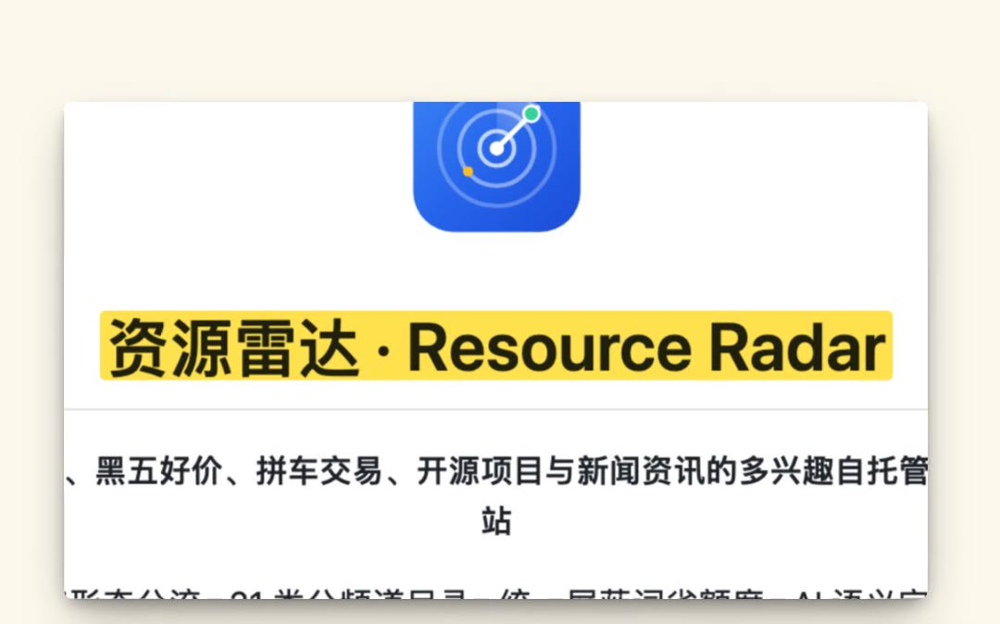
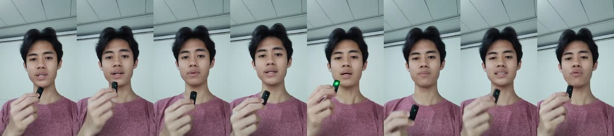
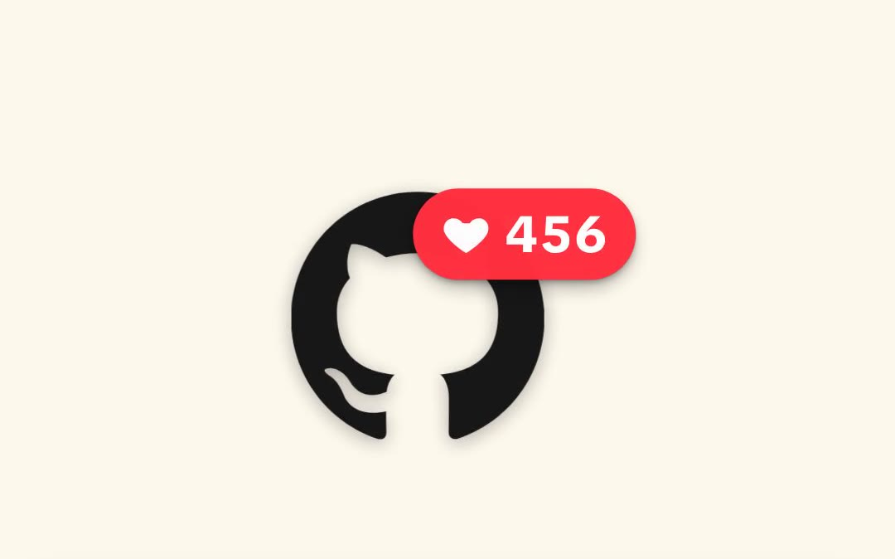

Halaman asli
Halamannya, ditandai di baris yang tepat
Sebut nama produk dan ia menangkap halamannya, lalu menandai baris yang sedang dibicarakan.
Akses awal · untuk kreator talking head
Kirim satu rekaman panjang. kembar membuang retake-nya, memotong sampai ke kata, memberi caption satu kata sekali, dan menaruh halaman aslinya di layar begitu kamu menyebutnya.

Rekamannya Editnya
Editnya
Cara kerjanya
Kamu melihat tiap keputusan sebelum terjadi, dan bisa mengembalikan yang mana pun.
Satu rekaman panjang, retake-nya ikut. Ia mencari salah mulai dan jeda mati dulu, lalu menunjukkan tiap kata yang dibuang.
Satu kreator atau beberapa. Ia mengukur tempo, irama caption, posisi kartu, dan cara zoom mendarat. Hanya sifat editingnya, bukan klip, suara, atau branding mereka.
Rencana caption dan kartunya mendarat di kata yang kamu ucapkan. Kamu setujui stills-nya, lalu render.
Yang kembali
Tidak ada template dan tidak ada stok. Tiap kartu dibuat untuk kalimat di bawahnya.

Sebut nama produk dan ia menangkap halamannya, lalu menandai baris yang sedang dibicarakan.

Pecahan jadi pecahan, daftar jadi daftar, dan tiap bagian mendarat di kata yang memintanya.

Sebut sebuah angka dan ia berhitung sampai ke sana di layar, di rekaman yang sama, tanpa rekam ulang.
Caption berjalan satu kata sekali dan dipotong per frasa, jadi tidak ada yang terputus di tengah ide.
Yang kami lakukan berbeda
Tiap kata yang dibuang terdaftar. Kalau potongannya salah, kamu kembalikan.
Stills-nya datang dulu. Tidak ada yang dirender sebelum kamu bilang ya.
Bilang yang salah, dan hanya bagian itu yang berubah. Sisanya tetap seperti semula.
Yang kamu setujui di review persis yang kamu unduh.
Kamu tidak butuh studio, timeline, atau kamera kedua. Satu rekaman dan beberapa edit yang kamu suka sudah cukup jadi input. Akses awal dibuka bertahap.
Pertanyaan
Tidak. Ia mengukur sifat editingnya: tempo, irama caption, posisi kartu, cara zoom mendarat. Klip, suara, musik, dan branding mereka tidak pernah dipakai.
Satu rekaman panjang dan 3–6 video yang kamu suka. Itu seluruh inputnya.
Sebut yang mana. Hanya kartu itu yang berubah, sisanya tetap seperti semula.
Bisa. Indonesia dan Inggris, caption-nya juga.
Bertahap, dalam kelompok kecil. Kami tidak menjanjikan tanggal sampai bisa menepatinya.
Akses awal
Satu email untuk konfirmasi, satu lagi saat kelompokmu dibuka. Kami tidak menjanjikan tanggal sampai ada.
Kami memakai alamatmu hanya untuk memberi kabar saat aksesnya dibuka, tidak untuk yang lain. Bisa berhenti kapan saja.